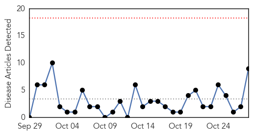
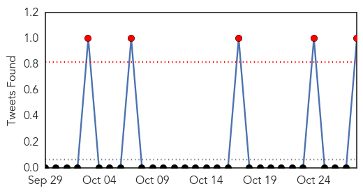
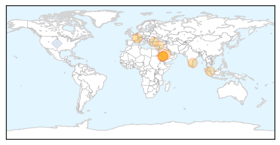
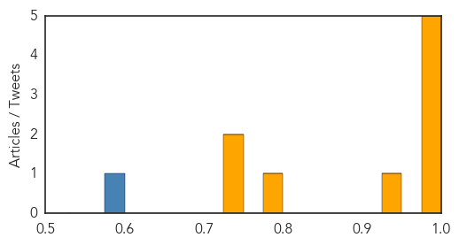

Toggle navigation
Early Warning
Daily Alerts
Middle East Respiratory Syndrome
Oct 28, 2014
Compare to:
-
Dengue Fever
Hemmorhagic Fever
Mold/Fungal Infection
Influenza
Meningitis
Pertussis / Whooping Cough
Cholera
Hepatitis
Chikungunya
Yellow Fever
Bubonic Plague
West Nile Virus
Swine Flu
Ebola
Measles
Unknown
Mumps
30 Day Trends
Web: 0
alerts
, 0
warnings
Twitter: 5
alerts
, 0
warnings
Top Articles:
0.996
MERS Returns with 23 New Cases
0.994
MERS still 'significant' threat to Saudi
0.994
MERS scare in the north
0.985
News Scan for Oct 28, 2014
0.984
New measures to save lives from deadly MERS virus
0.941
Haj-returnee tested for Corona virus, discharged
0.791
Lessons learned from SARS pandemic should inform current contagion protocols
0.738
Turkey identifies mysterious powder sent to consulates as chalk dust
0.738
Turkey identifies mysterious powder sent to consulates as chalk dust
Top Tweets:
0.580
RT: Saudi Arabia reported a new MERS-CoV case; 2 earlier recorded patients died (@SaudiMOH October 28 2014 edited) http:…
Web/News Articles

Tweets

Article Locations

Article Confidences
